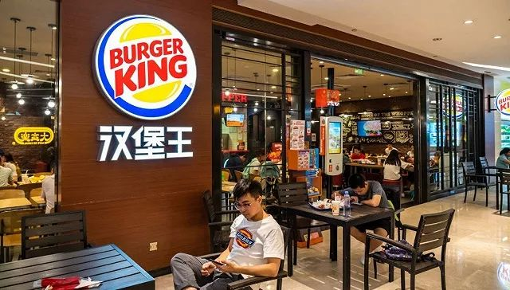

咖啡奶茶，盼你复工
原文链接 备份链接 《创新经济战疫计划》，是燃财经在新型肺炎疫情期间推出的特别栏目，关注创新经济企业遇到的新难题、商讨应该采取的新对策，希望能够帮助中小企业一起战胜挑战、把握机会。 作者 | 唐亚华 编辑 | 魏佳 2月10日起，北京、上 …

题图来源：Getty Images
记者：刘雨静 编辑：昝慧昉
“
中国地区汉堡王的销售额占集团整体销售额的2%，目前还难以确定疫情对集团实际收入的营销。
”
疫情之下，尽管已经关闭中国半数汉堡王门店，但其母公司RBI并未打算放缓在中国扩张的脚步。
餐饮连锁巨头RBI集团（Restaurant Brands International）近日披露了其2019年第四季度及全年财报。财报显示，得益于包括中国在内市场的增长，汉堡王2019年全球新开约1000家门店达到11500家，全球门店数增长约10%，全球同店销售额增长5%。不过另一方面，中国市场的疫情也很有可能对其2020年财务成绩造成一定影响。
RBI集团旗下拥有汉堡王、Popeyes、Tim Hortons三家全球性餐饮连锁，其中汉堡王目前在中国拥有超过1300家门店，咖啡连锁Tim Hortons拥有超过30家门店，Popeyes去年宣布正式登陆中国，计划2020年在上海开出中国首店。
疫情之下，汉堡王目前已经关闭中国半数门店。仍营业的门店与很多餐企的做法类似：鼓励人们用自动点餐机点餐，外卖时鼓励消费者采取无接触配送的方式。
在财报披露后的投资者电话会中，RBI集团CEO Jose Cil称，2019年，中国地区汉堡王的销售额占集团整体销售额的2%，“现在谈疫情的影响还为时过早，我们时刻在监控当下的事态发展。”
至于RBI旗下的另一品牌Tim Hortons，目前来看，由于该咖啡连锁在中国仍处于扩张阶段，门店数占全球总门店数的比例较小，且疫情期间大多Tim Hortons仍然营业，因此疫情造成的同店销售额波动对于整体集团的影响并不大。
界面新闻观察到，上海地区的Tim Hortons疫情期间均有开业，同样建议消费者采用外卖或自取的方式消费，在外卖订单的小票中，也注明了工作人员每日的体温和健康状况。
不过，RBI第四季度财报显示，以加拿大为主要市场的Tim Hortons增速并不理想。2019年第四季度，Tim Hortons同店销售额下跌4.3%，2019年全年同店销售额则下跌1.5%，主要由于加拿大本土市场成绩不佳。Jose Cil表示，从去年十月起他有约60%以上的时间都在加拿大工作，为Tim Hortons找到新的增长办法、并且招募更多在数字化和营销等方面有能力的新员工。“过去60天里我们在加拿大做了Tim Hortons近20年以来规模最大的消费者调研，”Jose Cil说，“试着去了解加拿大消费者如今都把钱花在什么地方。”
而对于RBI集团旗下的炸鸡连锁Popeyes而言，原本定于今年上半年在上海开出首店的计划，客流和销量多少会受到疫情影响。但RBI集团表示对中国市场的消费潜力仍然抱有信心，“去年我们的特许经营方帮汉堡王在中国开出了300多家门店，而我们的目标是未来十年在中国开出1500家Popeyes门店，我们相信它在中国这一全球最大的鸡肉消费市场，会具有巨大潜力。”
未经授权 禁止转载

原文链接 备份链接 《创新经济战疫计划》，是燃财经在新型肺炎疫情期间推出的特别栏目，关注创新经济企业遇到的新难题、商讨应该采取的新对策，希望能够帮助中小企业一起战胜挑战、把握机会。 作者 | 唐亚华 编辑 | 魏佳 2月10日起，北京、上 …
原文链接 备份链接 记者：李胤烽 何苗 编辑：陈臣 “ 在新冠肺炎疫情爆发后，2020年中国智能手机出货量可能降至3亿部，而在疫情爆发前的预测为3.4亿至3.6亿部。 ” 2月13日下午，受新冠肺炎疫情影响，小米10系列手机线上直播发布， …
原文链接 备份链接 市场反馈认为，公共卫生事件对经济的影响有限；在应对疫情的关键时刻，政治和金融市场应对疫情展示出截然不同的态度 文 |《财经》特派记者 金焱 发自华盛顿 编辑 | 苏琦 2月11日，世界卫生组织通过社交媒体推特发布其确定 …
原文链接 备份链接 图片来源：图虫 记者：张钦 编辑：昝慧昉 “ 此前海底捞发布公告称，考虑到近期疫情发展情况，中国内地门店停业时间将会继续延长。 ” 近日，江苏省常州市发布《关于紧急扩散寻找相关接触者的通知》：常州市在排查确诊的新型冠状 …
原文链接 备份链接 “谁能想到疫情爆发在春节期间，我们该备的货已经备齐，给员工的年终奖也已经发完，公司的现金流不多了。” 记者 | 刘娉婷 实习记者 | 陶紫东 编辑 | 王姗姗 按马纪原先的设想，2020年的龙虾季“是要打一场翻身仗 …